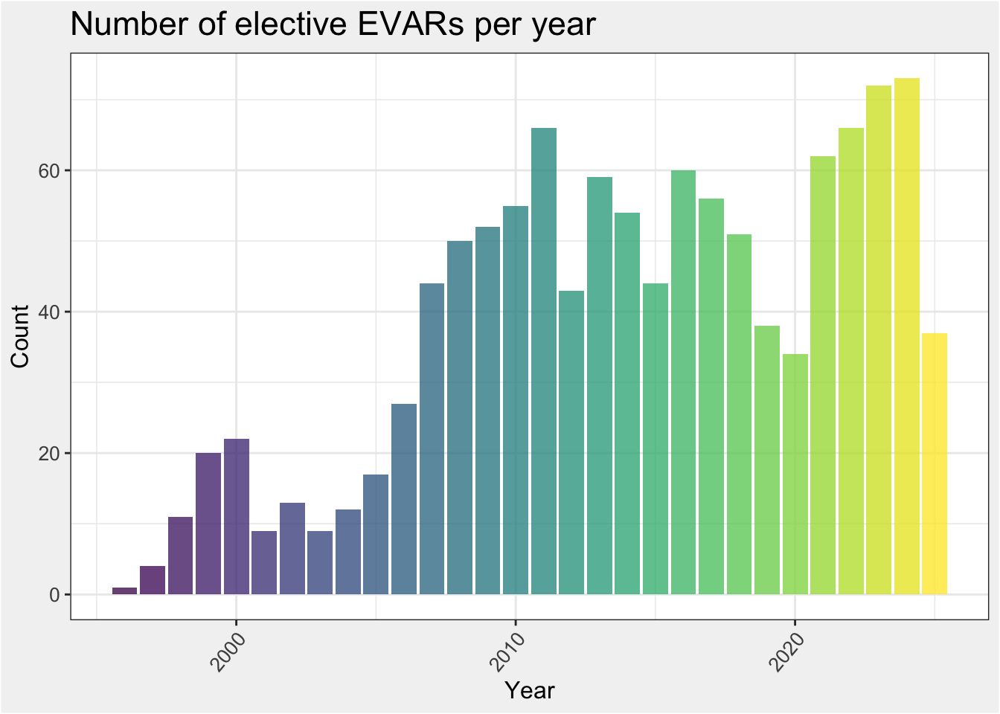
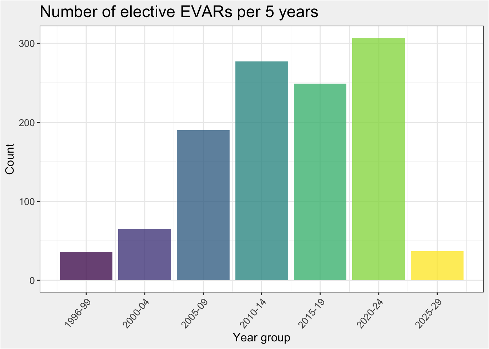
The following visualisations and statistics have been produced by assessing data on 1161 elective EVAR performed between 19 September 1996 and 04 July 2025.
The number of EVAR performed per year and five year group are shown on the two charts below:


Of the 1161 EVARs, iliac seal has been obtained in the following regions:
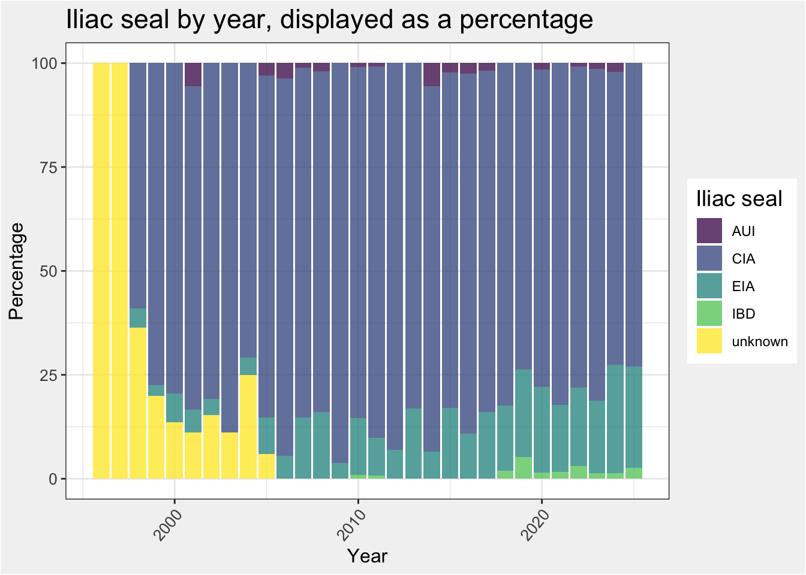
As an alternative way of visualising these data, the following table shows the number and percentage of seals by five year group:
Year group
|
Overall N = 2,3221 |
|||||||
|---|---|---|---|---|---|---|---|---|
| 1996-99 N = 721 |
2000-04 N = 1301 |
2005-09 N = 3801 |
2010-14 N = 5541 |
2015-19 N = 4981 |
2020-24 N = 6141 |
2025-29 N = 741 |
||
| Seal | ||||||||
| AUI | 0 (0%) | 1 (0.8%) | 6 (1.6%) | 8 (1.4%) | 7 (1.4%) | 7 (1.1%) | 0 (0%) | 29 (1.2%) |
| CIA | 44 (61%) | 103 (79%) | 333 (88%) | 484 (87%) | 407 (82%) | 474 (77%) | 54 (73%) | 1,899 (82%) |
| EIA | 2 (2.8%) | 6 (4.6%) | 39 (10%) | 60 (11%) | 78 (16%) | 122 (20%) | 18 (24%) | 325 (14%) |
| IBD | 0 (0%) | 0 (0%) | 0 (0%) | 2 (0.4%) | 6 (1.2%) | 11 (1.8%) | 2 (2.7%) | 21 (0.9%) |
| unknown | 26 (36%) | 20 (15%) | 2 (0.5%) | 0 (0%) | 0 (0%) | 0 (0%) | 0 (0%) | 48 (2.1%) |
| 1 n (%) | ||||||||
82 patients have suffered a limb occlusion out of 1160 patients having elective EVAR (7.1%).
Limb occlusions rate overall is 4.3% (99 occluded limbs out of 2293 deployed limbs.)
By only charting limbs which occlude and flipping the chart to show time to event, we can visualise when limb occlusions occur.
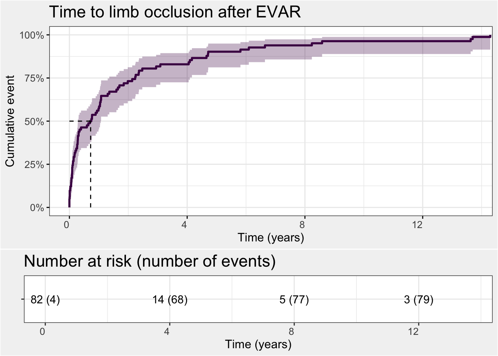
Median time to occlusion is 263.5 days and nearly three quarters of occlusions have happened by two years. We can use this information to contextualise the chart in section 4.1 (ie. the very recent years with low occlusion rates are probably not low simply because they are recent).
Occlusion events in this group at 1, 2 and 5 years are shown below.
Time since EVAR
|
|||
|---|---|---|---|
| 1 year | 2 years | 5 years | |
| LGO events | 57% (45%, 67%) | 73% (62%, 81%) | 90% (81%, 95%) |
This can be broken down into five years groups below:
Year group
|
||||||||
|---|---|---|---|---|---|---|---|---|
| 1996-99 N = 721 |
2000-04 N = 1291 |
2005-09 N = 3741 |
2010-14 N = 5461 |
2015-19 N = 4911 |
2020-24 N = 6071 |
2025-29 N = 741 |
Overall N = 2,2931 |
|
| Occluded | 2 (2.8%) | 5 (3.9%) | 19 (5.1%) | 47 (8.6%) | 9 (1.8%) | 16 (2.6%) | 1 (1.4%) | 99 (4.3%) |
| 1 n (%) | ||||||||
The number of occlusions per individual year is better visualised as a chart:
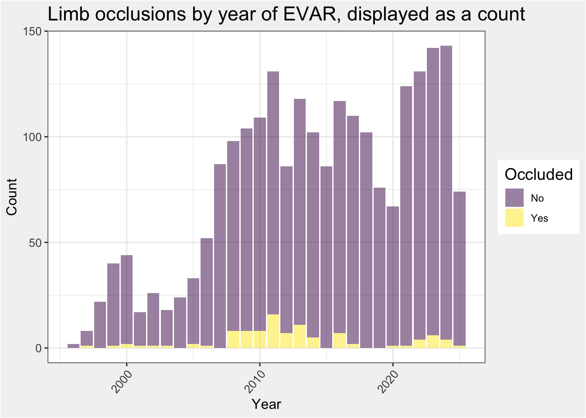
As the number of limbs inserted each year varies widely, it can be more useful to visualise occlusions as a rate rather than as an absolute number.
The chart below therefore visualises the proportion of limb occlusions per year:
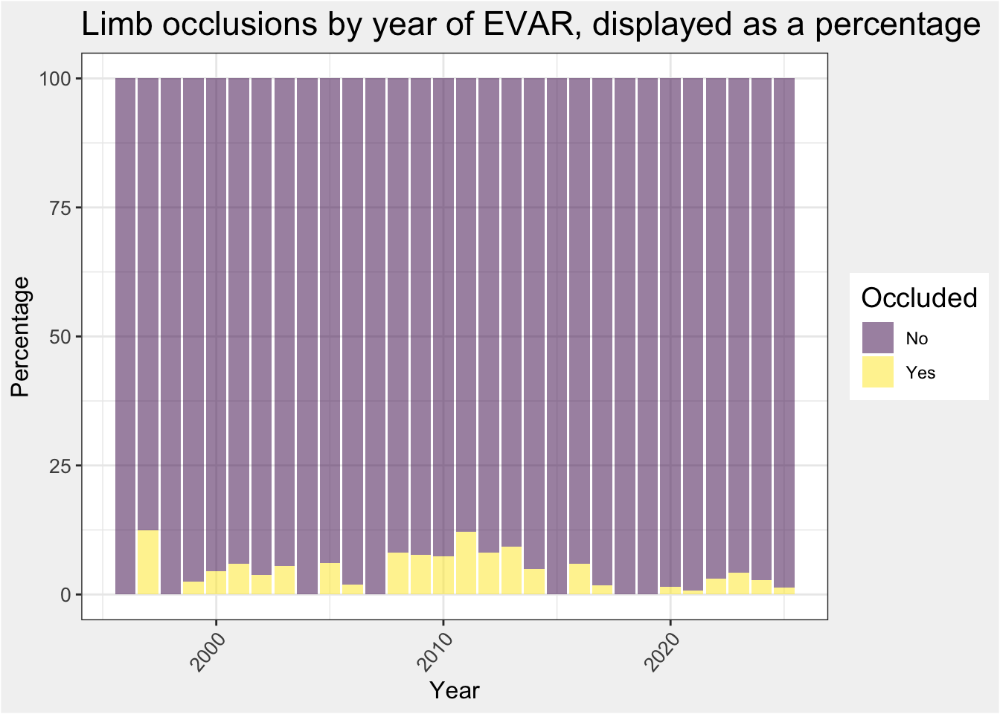
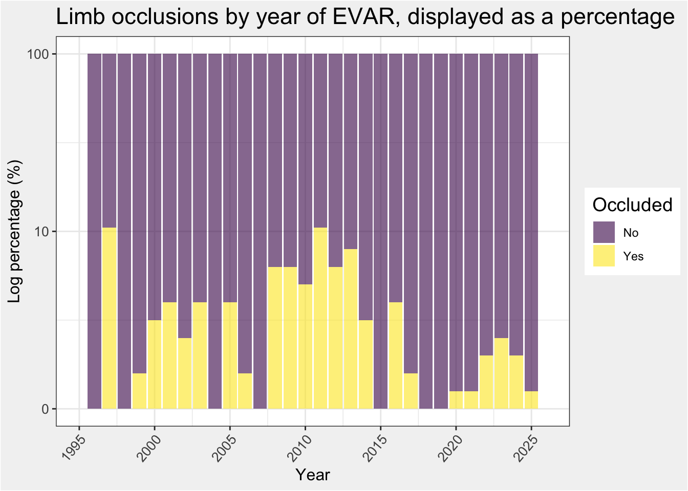
Note that more recent cases have had a much shorter follow up time in which to occlude. Time to occlusion will be explored later.
Using the mean limb occlusion rate and assuming there is no reason why limb occlusion for a particular year should significantly differ from any other year, we can calculate and plot the observed and expected frequencies of limb occlusion per year.
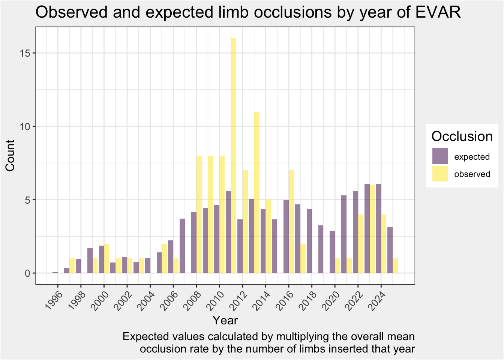
Chi-squared analysis shows that there is no statistically significant difference between observed and expected frequencies.
This section will use Kaplan Meier analysis to assess ‘survival’ from limb occlusion.
For simplicity, only limbs with more than 100 deployments will be included.
| Device | Count |
|---|---|
| Medtronic Endurant II | 878 |
| Terumo Aortic Anaconda | 626 |
| Cook Zenith | 266 |
| Medtronic Talent | 148 |
| GORE Excluder | 144 |
| Medtronic Endurant | 126 |
Limb occlusion rate in this group is 4.4% (2160 limbs).
Limb occlusion survival is shown in the plot below:
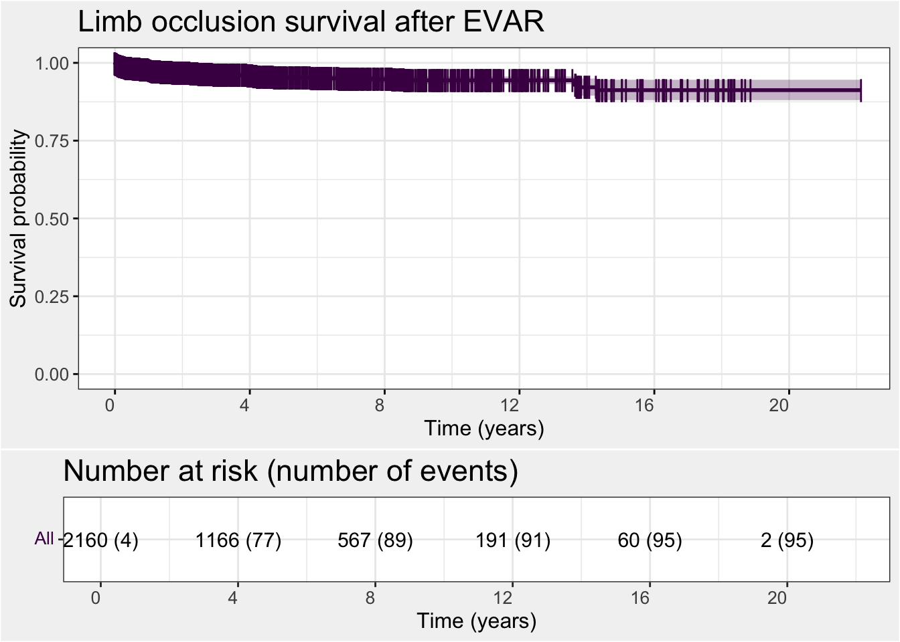
As limb occlusion rate is so low, the y-axis will be compressed on the following charts. Pay close attention to the y-axis to avoid errors in interpretation.
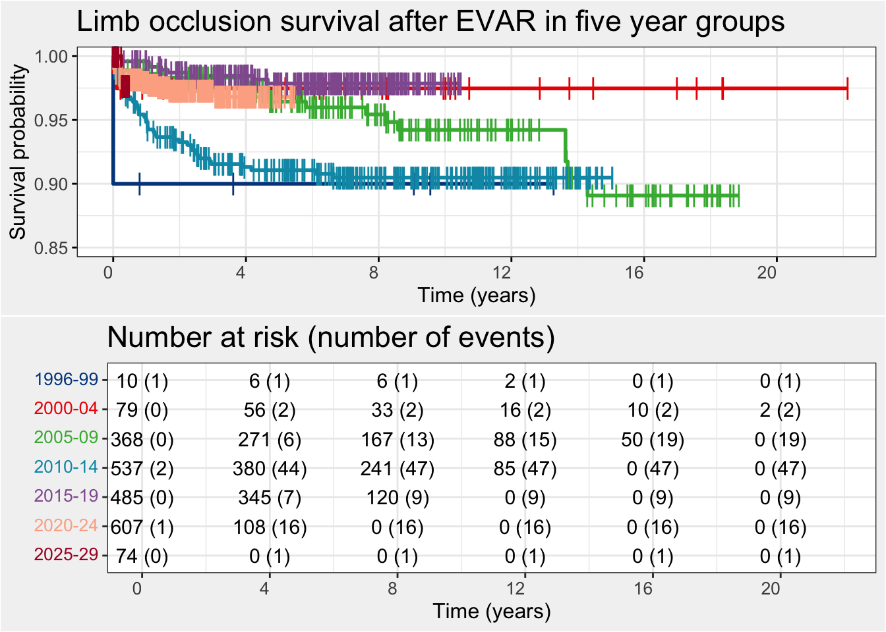
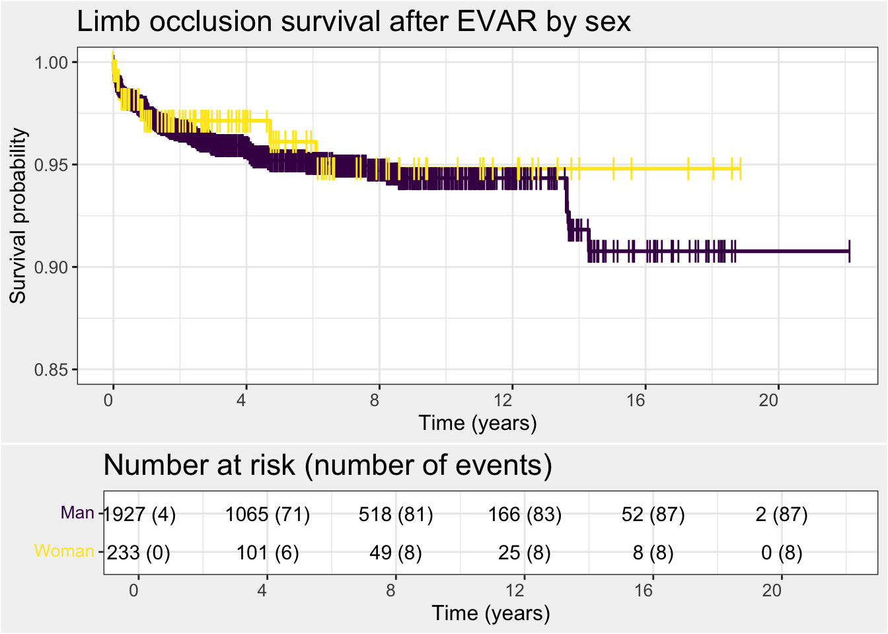
There is clearly no difference between the groups, which can be confirmed with a Log-Rank test - p = 0.62
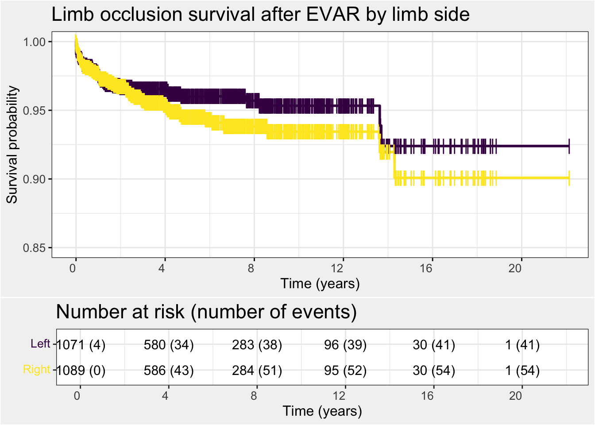
There is clearly no difference between the groups, which can be confirmed with a Log-Rank test - p = 0.2
All IBDs seal in EIA - these have been combined.
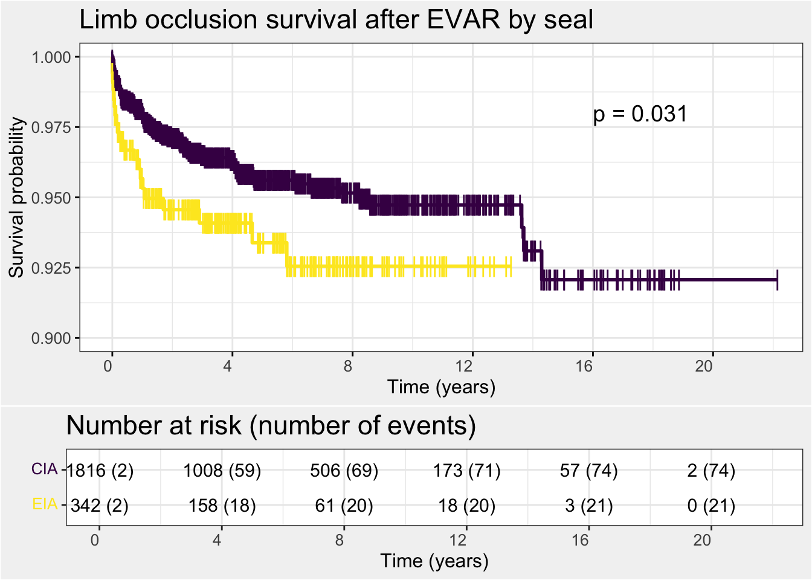
There is no difference between the groups, which can be confirmed with a log rank test - p = 0.03
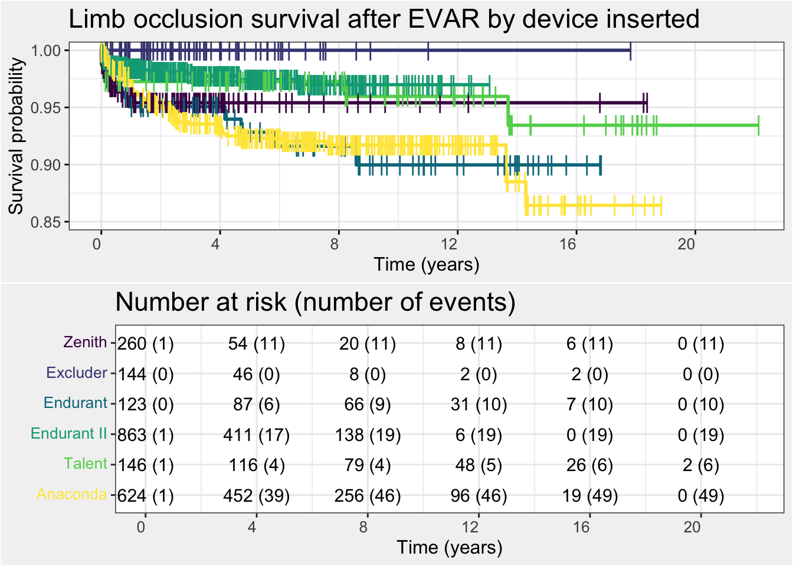
Differences between these groups are hard to detect visually. Pairwise Log-Rank test highlights the differences:
Pairwise comparisons using Log-Rank test
data: occlnKmData and Device
Cook Zenith GORE Excluder Medtronic Endurant
GORE Excluder 0.1708 - -
Medtronic Endurant 1.0000 0.0722 -
Medtronic Endurant II 0.5616 1.0000 0.0608
Medtronic Talent 1.0000 0.6635 1.0000
Terumo Aortic Anaconda 1.0000 0.0593 1.0000
Medtronic Endurant II Medtronic Talent
GORE Excluder - -
Medtronic Endurant - -
Medtronic Endurant II - -
Medtronic Talent 1.0000 -
Terumo Aortic Anaconda 0.0013 1.0000
P value adjustment method: bonferroni There are significant differences between Endurant and Endurant II (Endurant II has lower limb occlusion rates) and between Anaconda and Endurant II (again, Endurant II has lower limb occlusion rates).
Despite having zero limb occlusions, there is no significant difference between Excluder and any device, presumably at least in part due to the relatively low number of Excluder limbs inserted.
To pick out the difference in these two stent-grafts, they have been plotted separately. Comparisons with the Endurant stent-graft have not been made as this stent-graft has been replaced with Endurant II and so is no longer being inserted.
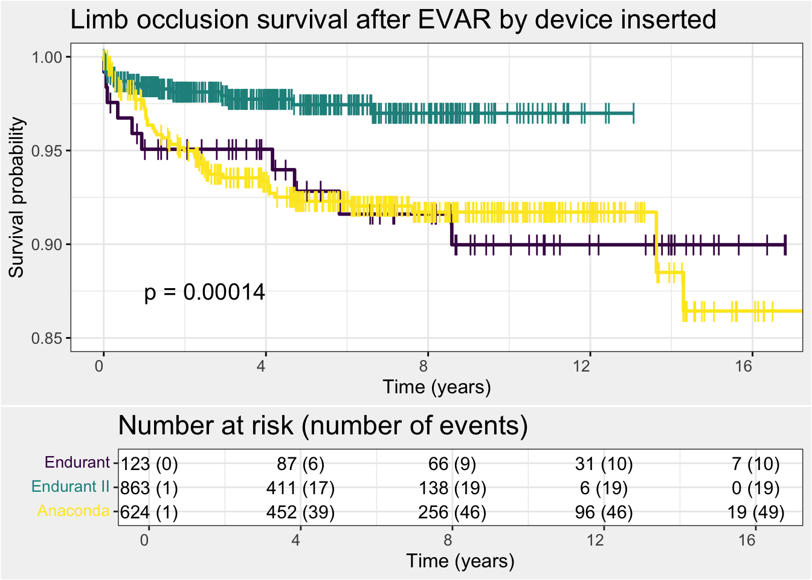
The p value differs from above as the initial Log-Rank was a six way comparison with Bonferroni correction whereas the one on the chart is just a three way comparison.